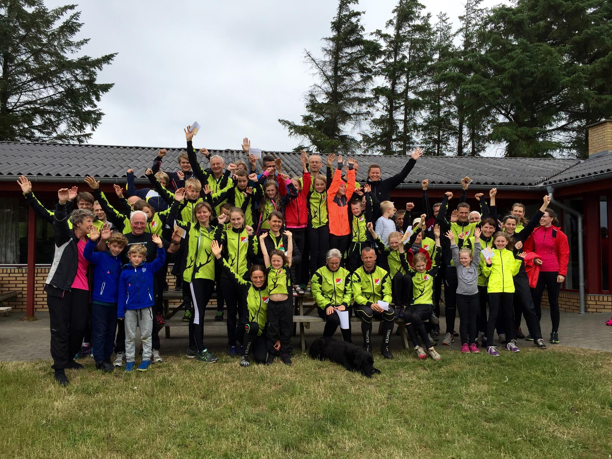
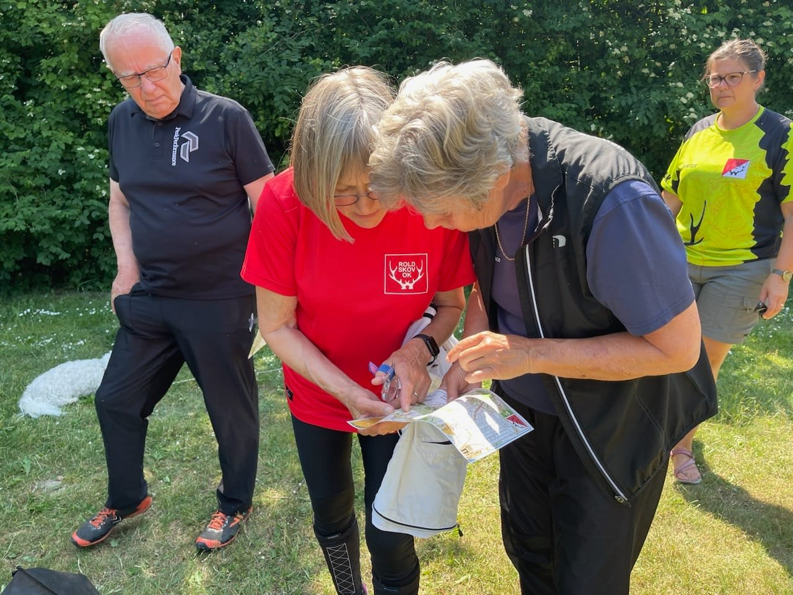
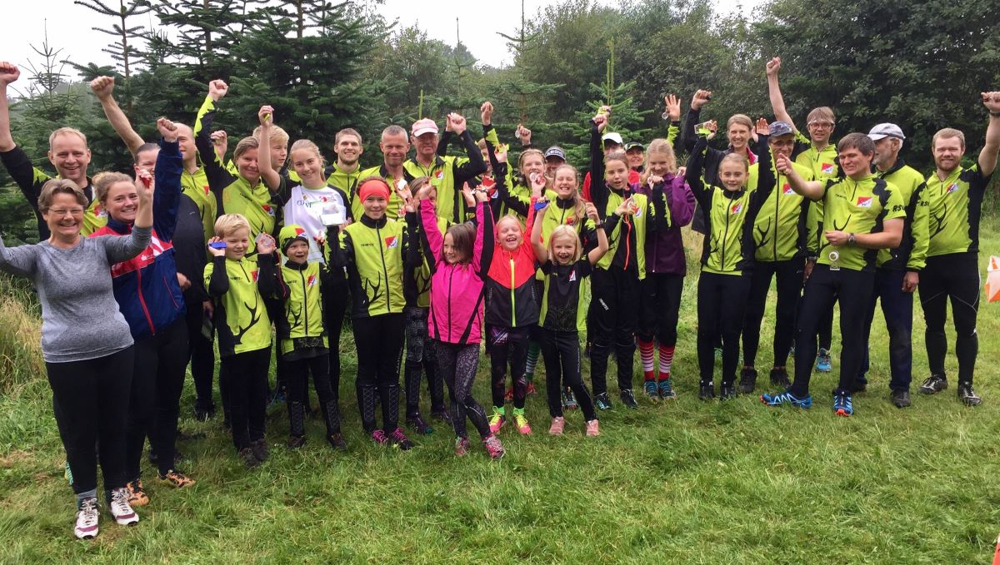
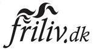
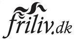

Forside
Velkommen
RSOK er en orienteringsklub, som har eksisteret siden vinteren 1942,
hvor klubben blev stiftet med især vinteraktiviteter som skiløb og
skøjtning på programmet. Det hører også med til klubbens historie, at
flere af dem, som dengang stiftede klubben, var aktive i
modstandsbevægelsen, og derfor brugte idrætsaktiviteterne som dække
for modstanden mod besættelsesmagten. Sidenhen både voksede og faldt
antallet af medlemmer. Sidstnævnte så meget at klubben faktisk blev
genstartet ikke mindre end 2 gange, men det ændrede nu ikke på, at vi
fejrede klubbens 75-års jubilæum i 2017 idet den på intet tidspunkt
har været helt nedlagt. Så vi er både en klub, der har rundet de 80
år, men også en klub med masser af fornyelse og nye moderne idéer.
Det er for alle - Også for dig og jer!
Orienteringsløb er for alle, der har lyst til at færdes i skov og i
terræn og finde vej ved hjælp af kort og kompas. Men orienteringsløb
finder også sted i parker og i byer, fordi man kan navigere og finde
poster overalt, blot der er lavet et kort over området. Deltagere i
o-løb findes i alle aldre – også i RSOK. Ganske små børn, der følges
med forældre eller bedsteforældre, eller som selv løber en bane, når
de er klar hertil. I princippet er der ingen øvre aldersgrænse, for så
længe man kan færdes rundt på banen, kan man deltage. Banerne findes
nemlig i aldersintervallet drenge/piger indtil til 10 år og helt op
til herre/damer +90 år. Afpasset efter alder, køn og sværhedsgrad, så
alle kan være med, uanset hvilket niveau man er på, eller hvor dygtig
eller erfaren man er med kortet i hånden.

Ny løber?
Som ny løber i RSOK, får du muligheden for at stifte bekendtskab med
sporten. Vi tilbyder de første 3 måneder gratis hvor du i
forbindelse med klubbens træningssløb møder rutinerede medlemmer,
som er klar til at hjælpe dig i det omfang du har brug for. Alle kan
være med både ung som gammel og det er ikke så svært som det lyder.
Vil du vide mere?

Allerede medlem?
Har du husket at melde at melde dig til O-teknisktræning og
fællesspisning? Er du klar til at blive en del af bestyrelsen eller
vil du registrer din seneste løbede tid. Så log på din allerede
eksisterende konto.
Log ind
Indmeldelse
Til nye medlemmer tilbyder vi en gratis prøveperiode på 3 måneder, det
svarer til et forårs- eller efterårshalvår. I denne periode kan du
møde op til vores træningsløb og arrangementer, for at opleve om
klublivet og orienteringssporten er noget for dig. Den eneste udgift
vil i den periode være 20kr. pr. kort i de 4 områder i Rold Skov, som
dækker klubbens løbsområder. Vil du vide mere kontingent og priser så
klik nedenfor
Priser og kontingent
Nyhedsbrev
Få tilsendt vores nyhedsbrev direkte i din indbakke, tilmeld dig
herunder.
Tilmeld
En stor tak til vores sponsorer
 

 Familie
Familie
 Børn og unge
Børn og unge
 Voksne
Voksne
 Senior
Senior